Seeking
Graduating June 2026 · open to full-time robotics roles in perception, embodied AI, and on-device LLMs
Robotics Software & Embodied AI
Building software-first robotics · ROS architecture, perception models, Reinforcement Learning, and human–robot interaction.

Selected Works
I am passionate about embodied robotics. Through my projects, I have built hands-on experience in perception, reasoning, manipulation, and legged balance. My dream one day is to contribute to a humanoid robot that brings all of these capabilities into one integrated system.
Select a project to see the subsystem it targets.
3D model: Character Base by madtrollstudio (CC-BY 3.0).

Intelligence Lead · Capstone
Adaptive AI boxing sparring partner and coach.

Solo Researcher · NUS
Self-proposed offline AI companion for elderly care.

Research Intern · Osaka
Deployed at Osaka Expo 2025. YOLOv12 + SLAM for social robot gaze.
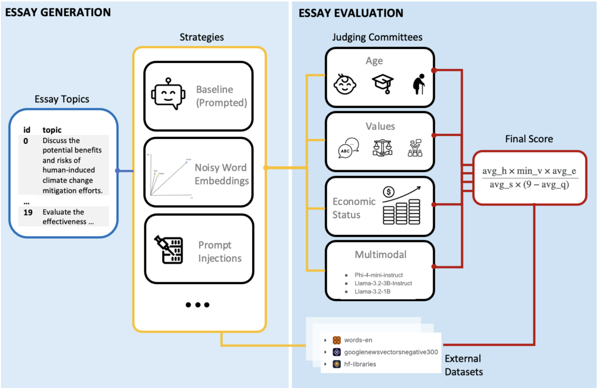
AI Safety Research
Analyzing and mitigating bias in Large Language Models.
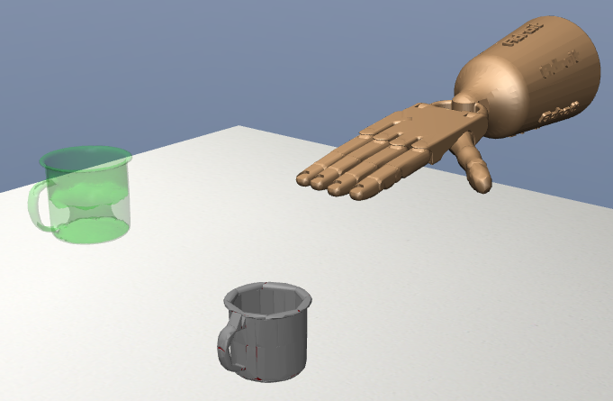
Research Intern · A*STAR
Sim-to-real reinforcement learning for dexterous manipulation.

NUS IDP · 2022-2024
Self-balancing robot with 3-axis stabilized gimbal.
I love designing posters and put strong emphasis on making information easy to understand at a glance. For LifeQuest, I designed both the game mechanics and its poster visuals.


This page covers my Robot Intelligence subsystem. Click Read the Full Deep-Dive to open my full report and see the other subsystems (mechanism, upper, lower) built by my teammates.
Adaptive boxing sparring partner · I owned the AI brain: perception, real-time ROS 2 runtime, and on-device LLM coach. Built end-to-end so the robot actually reacts to real punches, not just scripted drills.
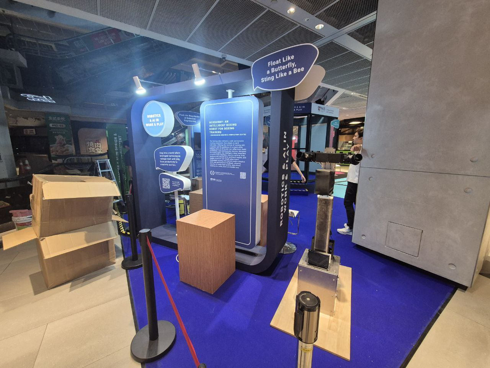
Built a custom annotation GUI for synchronized RGB-D clips, then generated cleaner labels for training.
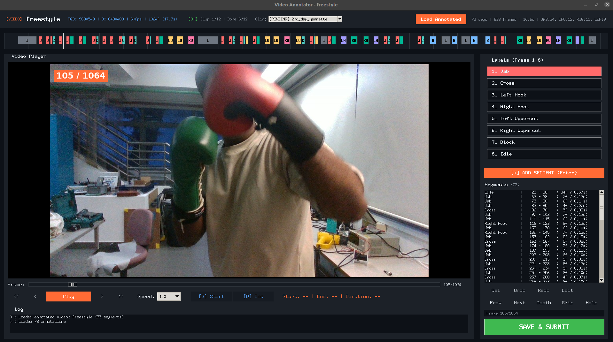
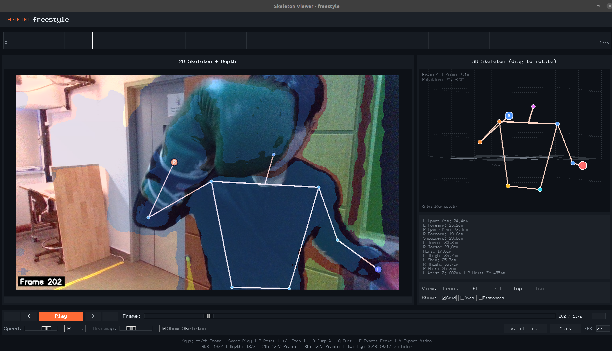
Dual-branch Voxel-Pose Transformer + TensorRT FP16, integrated into a 10-node ROS 2 Humble runtime with CV + IMU fusion and an on-device LLM coach. Real-time prediction as the punch lands, not after.
Interpretability
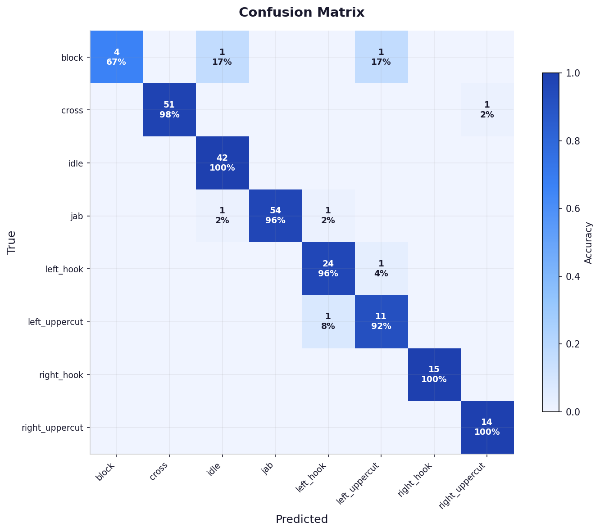
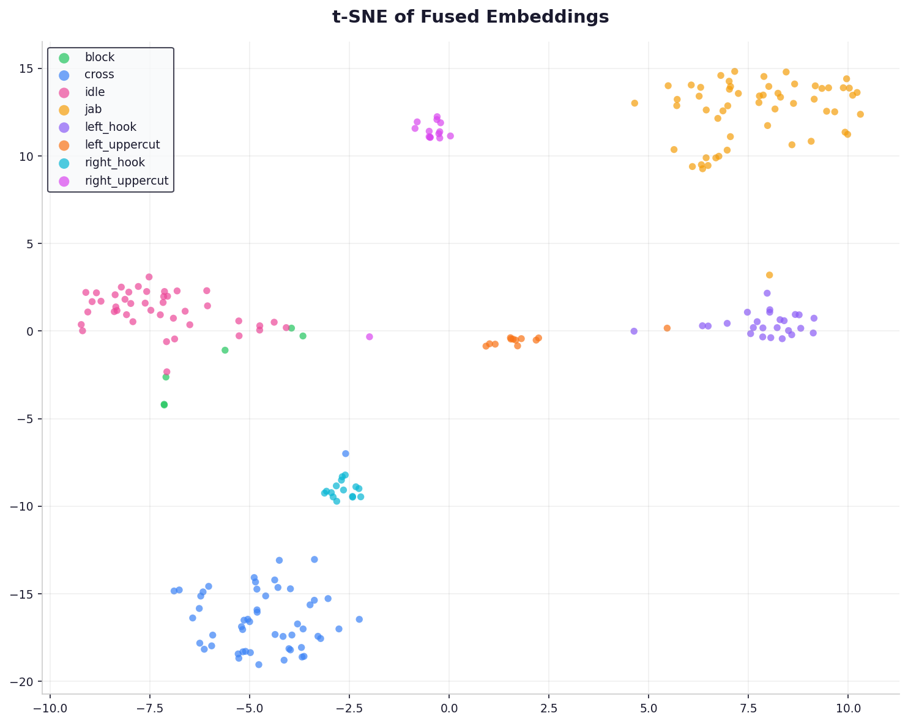
96.8% val accuracy · 30 fps on Jetson · 10-node ROS 2 · 146 unit + 28 integration tests.
Each phase of exploration failed on its own, but taught something the final architecture needed. Pose gave hand identity but broke under glove occlusion. Raw pixels hit 87% but were too heavy for the Jetson. Voxels captured 3D motion but couldn't tell left from right. Fusing voxels with pose closed the loop at 97.3%, deployed at 96.8% after TensorRT + the block-annotation fix.
Camera frames flow through a TensorRT FP16 YOLO pose (16 ms) and the action model (8 ms), comfortably inside the 33 ms real-time budget. A 10-node ROS 2 Humble graph orchestrates perception, IMU impact events, CV + IMU fusion, motor control, and the dashboard bridge.
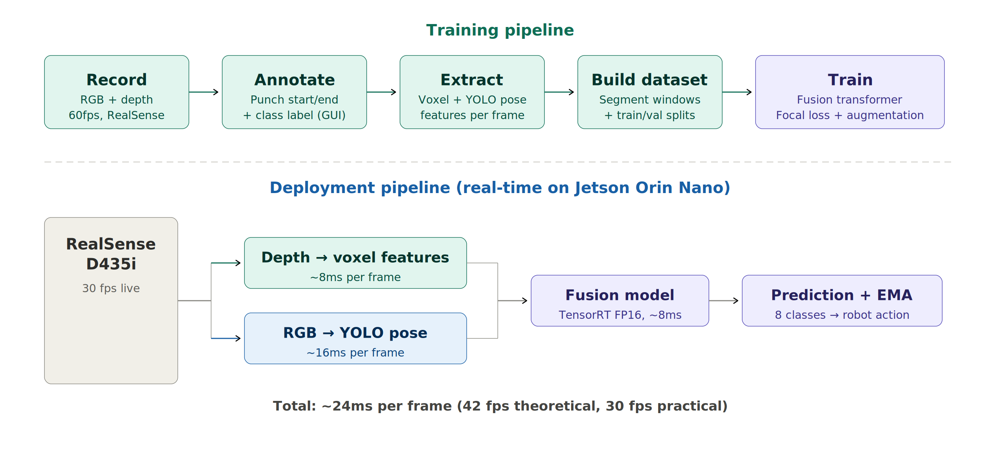
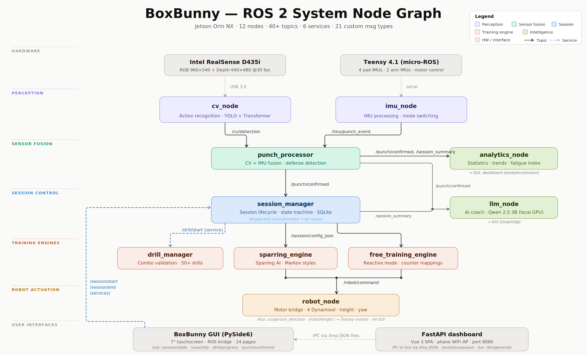
Boxing gloves occlude the hands exactly when a punch matters most, which breaks standard pose estimation. The model pairs a depth-voxel branch (12³ grid, fast 67 ms and slow 267 ms timescales) with a YOLO pose branch, then fuses them in a 4-layer Transformer encoder over a 12-frame rolling window. Voxels fill in exactly where the pose fails.
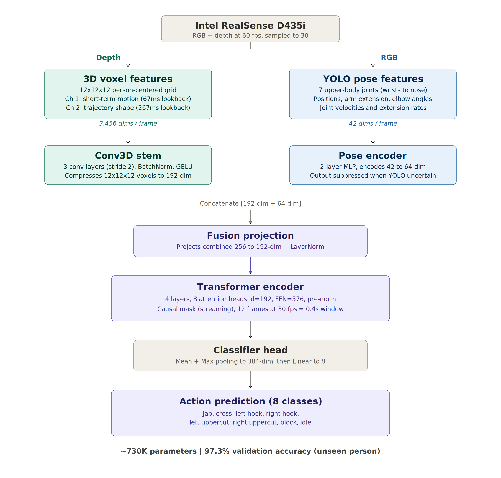
I designed the full phone dashboard so users never have to bend over the robot's 7-inch touchscreen with gloves on. To pair, the touchscreen GUI displays a QR code: scan it and the dashboard opens in the phone browser. Under the hood a localhost.run reverse tunnel publishes the FastAPI server over a unique HTTPS URL, so the phone doesn't need to be on the same WiFi as the robot. It works on gym WiFi, cellular, or any network. A local-access fallback kicks in if outbound internet is unavailable.
The on-device Gemma 4 E2B coach is exposed to the phone via FastAPI and surfaces as three distinct flows. Motivated by CDE AI Fair feedback: users wanted to chat with the coach but the touchscreen keyboard was awkward with gloves, so the conversation moved to the phone.
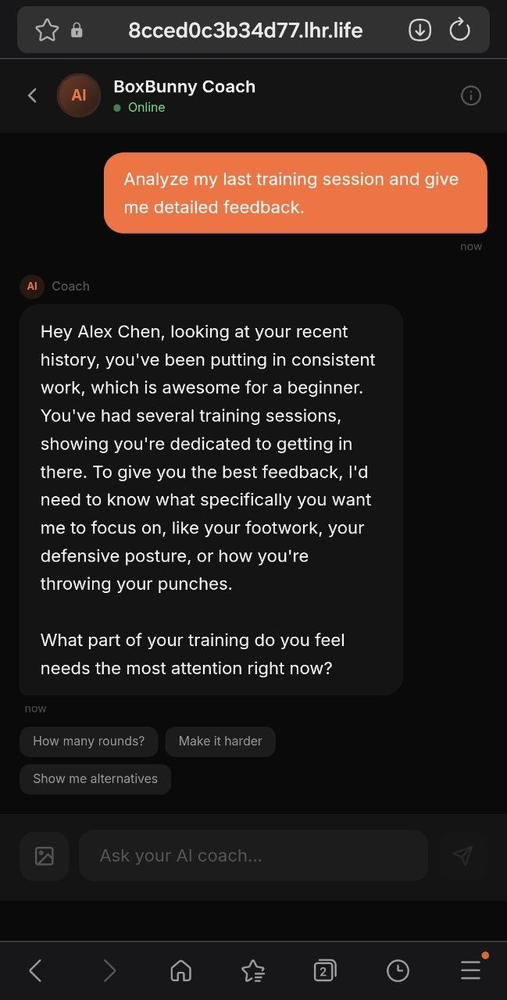
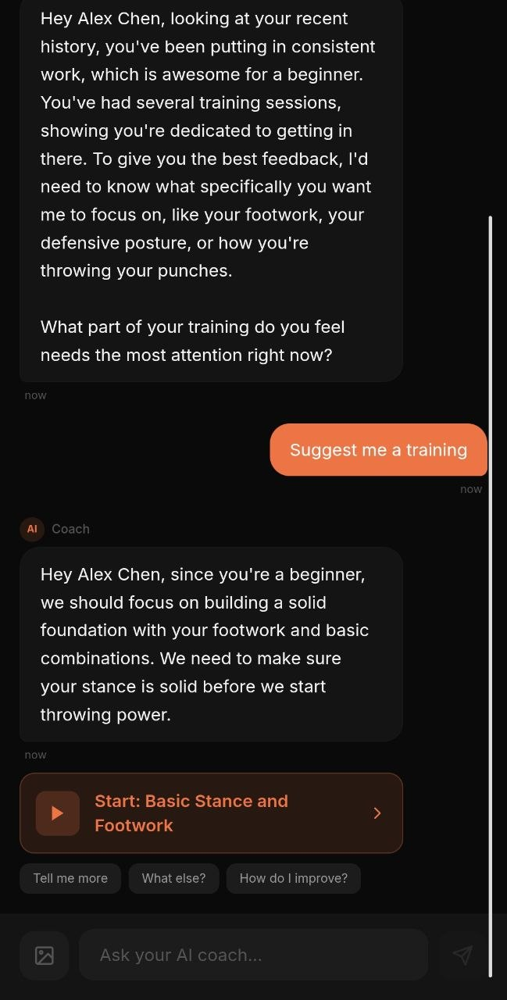
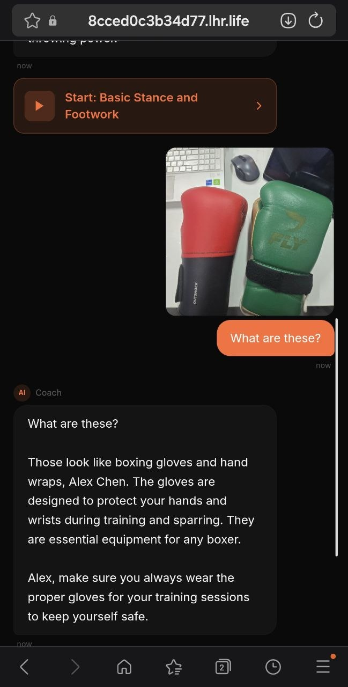
Getting coherent coaching out of a 2B-parameter on-device model took real tuning. I built a standalone PySide6 tuning GUI to iterate on system prompts, temperature, top-p, context length, and generation parameters while watching streaming outputs side-by-side. Every parameter was tuned against real session transcripts before shipping to production.
Prompt alone was not enough. I grounded the model with a retrieval-augmented generation (RAG) layer over a 17-document boxing knowledge base (techniques, defence, combinations, training plans), injected into the context window during coaching analysis so the model quotes verified boxing advice instead of hallucinating plausible-sounding fluff a beginner could never verify.
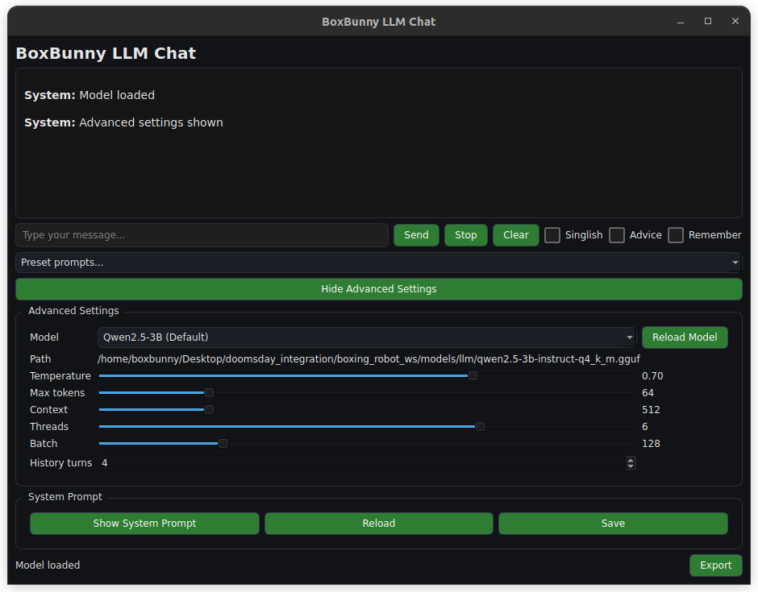
Camera-to-SLAM localization pipeline for socially aware robot gaze at Expo scale.
Porting a dexterous manipulation RL pipeline from Adroit to Inspire hand in simulation.
Evaluating and mitigating social biases (gender, race, religion) in state-of-the-art Large Language Models.
NUS Innovation & Design Programme · my entry point into robotics. Where I first learned to design, build, and program physical systems from scratch.
Three chassis iterations evolved from a first prototype into a full balancing system. The key novelty was 3-axis active gimbal stabilization, which kept the robot's first-person camera view steady so pilots could track opponents and aim more reliably during competition.


Experience using FEA workflows to evaluate chassis stiffness and stress distribution before fabrication.
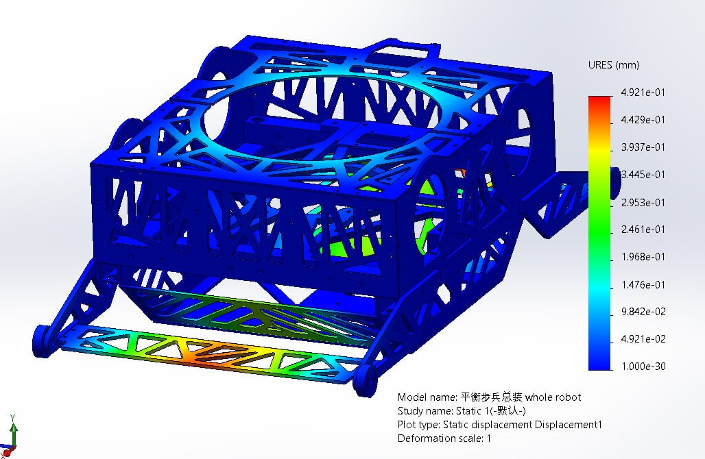
Built and tested control models in MATLAB/Simulink, then iterated LQR tuning in simulation before applying gains to hardware.
Controller tuning progression from first prototype to final standing behavior.
A robot that comforts · without compromising privacy. Companion looks at you, reads your mood, and replies with a face that reflects what it feels. Every model runs offline on a single Jetson Orin Nano, so it works without Wi-Fi and nothing ever leaves the device.

Every reply ends with an [affect] tag that drives one of 13 animated expressions on the ESP32 touchscreen face. YOLO26n-pose + HSEmotion continuously measure the user's valence and arousal and feed that signal into the LLM prompt · so the robot's mood is a direct response to yours.


Custom 2-DOF differential bevel-gear head in SolidWorks. 6 prototype iterations fixed cable routing, pivot alignment, and print warping to reach smooth independent pan/tilt.
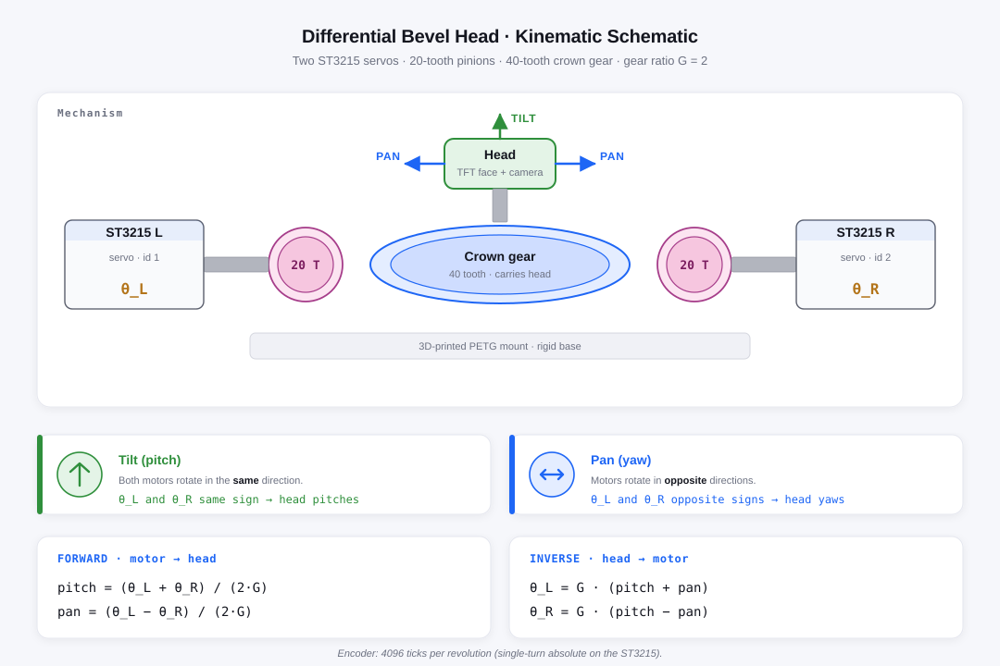
Camera feed runs through YOLO26n-pose for face tracking and HSEmotion for affect. Output is injected into the LLM prompt so replies carry an [affect] tag that animates the face live.
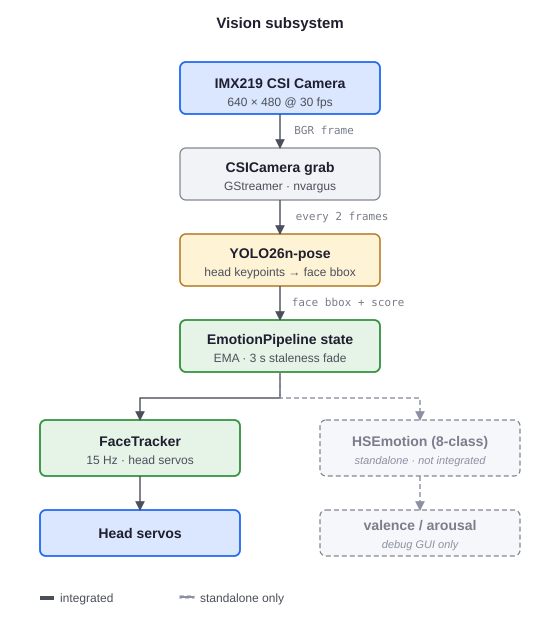
Sub-second streaming loop: VAD (Silero) → Parakeet STT → on-device LLM → Piper TTS. Rhubarb-driven lip-sync visemes stream to the face at ~30 Hz.
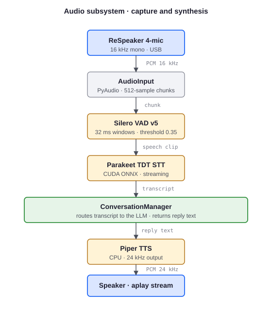
Six peripheral subsystems, one compute hub. Every line below is an actual physical cable running on the robot today · a Jetson Orin Nano orchestrates sensors, display, speaker, and two servos through a single CH343 bus adapter.
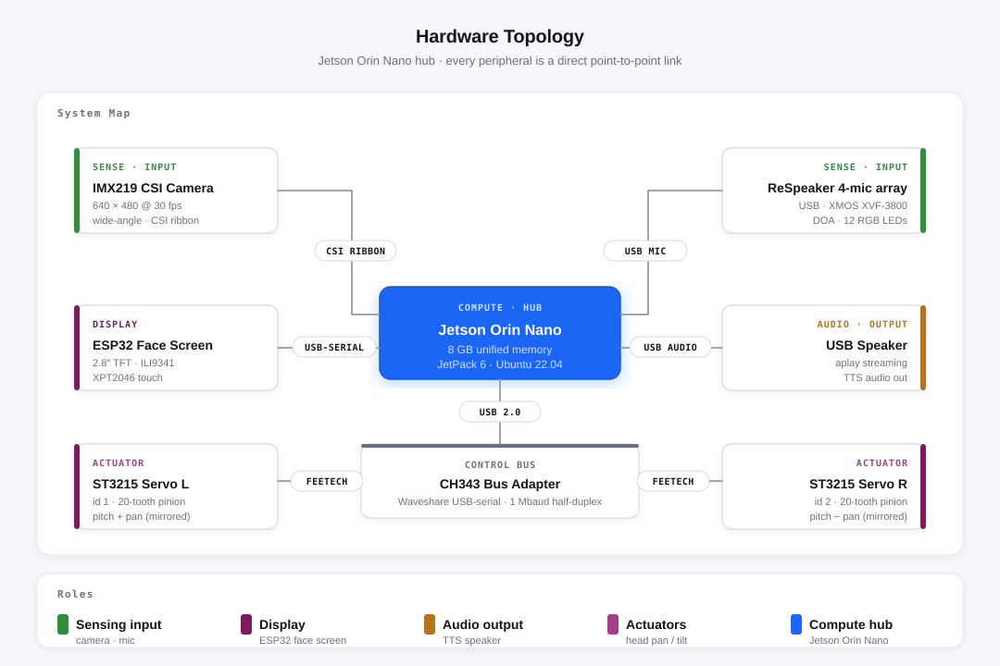
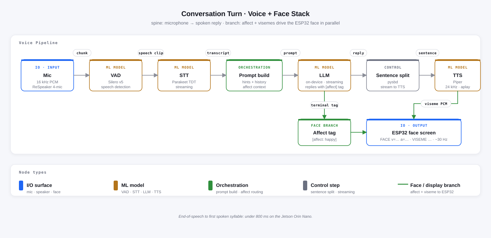
6 hardware iterationsConfig-swappable LLM/STT/TTSWatchdog + graceful degradationJetson + ESP32 multi-MCU
Professional Journey
ROS2 · SLAM · Perception · Mobile Robotics · Embedded (STM32)
YOLO · CV · Neural Nets · Action Recognition · RL · LLM
MATLAB/Simulink · Simulation · COMSOL · MuJoCo · SolidWorks · PID/LQR
Python · C++ · C · JavaScript · Docker · Git · Linux
Let's Connect
Email: yogeeswaran@u.nus.edu · LinkedIn: yogee-s · GitHub: Yogee-s